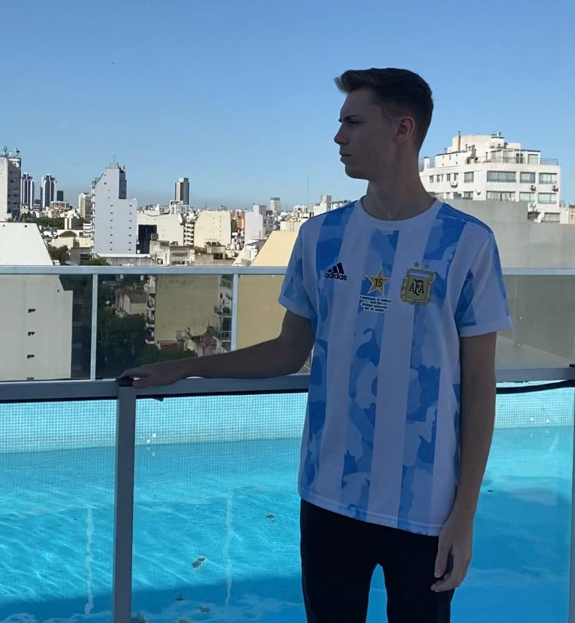
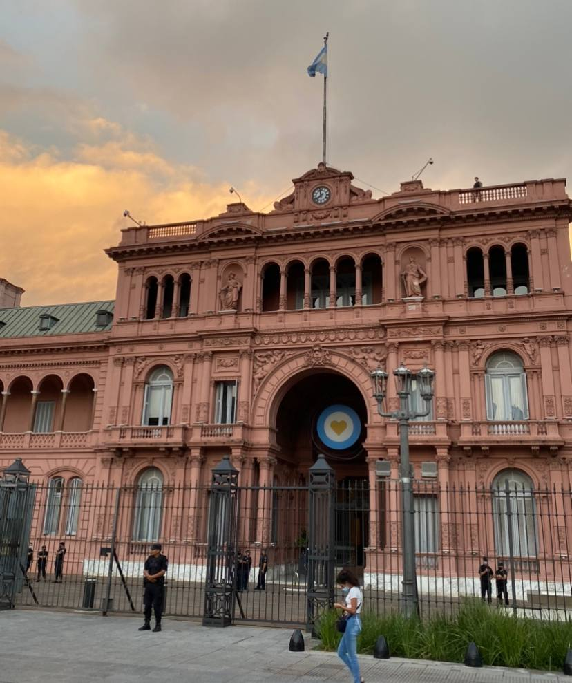
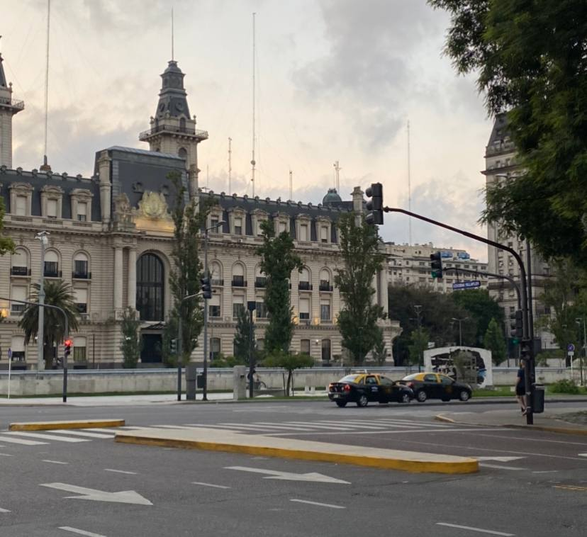

In the mood for BBQ, wine, mate, and architecture straight from Europe? Look no further than the capital of Argentina in South America.Here are the best areas around the city and surrounding province of the land of football (soccer!) and wine.
Palermo/Recoleta
These are two high-class neighborhoods filled with restaurants, bars, hostels and nice streets with interesting architecture. It's a great option to base your stay with the city and is only a quick Uber o metro ride away from most other popular sections of the city.

Some great places to go in this area are the large parks to the north end of Palermo, filled with palm trees, parrots, runners and even a Japanese garden! You can also visit the nearby Planetarium and Botanic garden, as this is a large area of the city that is completely filled with parks and green areas. Also be sure to check out the cemetery for the rich and famous in Recoleta.
Puerto Madero
This is another high class area more on the coast of the Río de la Plata, it has some great bars on the waterfront making it perfect for a night out. Along this strip includes the Puente de la Mujer (Women's bridge) famous for it's interesting design.The area around the waterfront is mostly high-rises, but the go directly behind and within a few minutes you'll arrive at 2 incredible places in the city, Plaza de Mayo and Plaza de la República!

These areas have some of the best European style architecture the city has to offer, straight from Paris. In Plaza de Mayo you will find the capital building La Casa Rosada named for it's rosy color, and then entering Plaza de la República to see be in a European styled Times Square, complete with the countries famous monument, El Obelisco.

Mar de las Pampas
If you venture a few hours south of the city, you will exchange the coast along the river for the Atlantic. The beaches here aren't spectacular and could easily be what you could find in New Jersey, but with some strange twists to make things interesting.I specifically went to Mar de las Pampas, but the more famous area just about 20 minutes away is Cariló. These areas are mostly private, upper class areas with some huge houses, log cabins, and German style houses. Another cool feature about the beach are the massive sand dunes before getting to the water!You can explore the oddly designed markets and towns near the beach, sandboard the dunes, or go surfing! Or of course, have some mate on the sand. It gets pretty cold here at night, but is warm during the day, and can get crowded when its sunny.
Leave a Comment
{% for comment in comments %}
By {{ comment.name }} on {{ comment.date_created }}
Leave a Comment
By {{ comment.name }} on {{ comment.date_created }}
{{ comment.comment }}